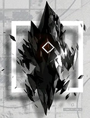
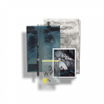
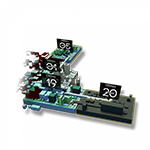

Originiums
Reunion Movement(Reunion)
Infected
Nomadic City
Rhodes Island
Ursus Empire
Victoria Empire
Lungmen
（注：此仅为最初的设定，后续还有大炎的尚蜀与玉门两座城市，拉特兰，伊比利亚，多索雷斯，卡兹戴尔等诸多国家出现，因官方还未给出具体描述，暂不列出。）
|  |  |  | |
|||||
| 源石 Originiums |
源石技艺 Originium Arts | 整合运动 Reunion Movement(Reunion) |
感染者 Infected |
移动城邦 Nomadic City |
罗德岛 Rhodes Island |
乌萨斯帝国 Ursus Empire |
维多利亚帝国 Victoria Empire |
龙门 Lungmen |
| 大地被起因不明的天灾四处肆虐，经由天灾席卷过的土地上出现了大量的神秘矿物——“源石”。依赖于技术的进步，源石蕴含的能量投入工业后使得文明顺利迈入现代，与此同时，源石本身也催生出“感染者”的存在 | 源石被发现之后，人们发掘出一种通过它来施放一系列令物质改变原有性状的技术，这种技术被称为源石技艺，常被俗称为“法术”。源石技艺所运用的能源，一般被认为来自于源石本身。而人是否能施放法术，以及所能施放法术的形式、强度、效果等，通常受到先天具备的素质、后天对源石技艺的学习能力这两方面因素的制约。 | 无种族立场，极端排外的感染者组织。他们宣称“感染者应对自己的身份感到骄傲，积极去获取并使用属于自己的力量”。试图用最原始的手段去争夺世界的公正。以某座被摧毁的伟大城市为开端，医疗机构“罗德岛”的突然介入，令整个事态向着未知发展。 | 被源石所感染的人。理论致死率100% ，死亡时存在扩散传染性以及潜在危险能力，是各国隔离驱逐的目标。长久以来，没人告诉他们该如何渡过余生，如今伴随着一位颠覆者的出现，越来越多的感染者被纳入一场名为“整合运动”的反抗浪潮。 目前只有罗德岛在明面上开发出来源石病抑制剂，使得有些正义的感染者趋之若鹜。 | 建造在可移动设备上的城市。频繁发生且破坏力巨大的天灾，迫使几乎所有的国家，都需要采用定期迁移家园与聚落的方式进行躲避。而移动城市，正是在这种需求下慢慢诞生的。人们在迁徙的过程中，尝试将建筑和种种装置安设在移动设备之上，并不断地扩大载具的规模。在文明与技术的演变之下，人们最终创造出了十分庞大的移动城市。 | 罗德岛制药公司作为感染者问题专家，聘用感染者，深入危险地区，通过种种手段，已经成功解决了数起感染者引发的事件。而今，他们将面对史无前例的感染者暴乱。在各个势力间游走，发掘不为人知的内幕，抵挡感染者的疯狂进攻，你的决策将影响着罗德岛亦或者是整个世界…… “感觉doctor好像很厉害的样子”by—战地记者可露西尔 | 以乌萨斯为主体的庞大帝国，幅员辽阔，地处极北，虽然坐拥着大量矿产，但多数国土处于未开发状态，在上一任皇帝的带领下，乌萨斯开始了工业化和强兵之路，通过对周边国家发起战争使得国力极速发展而后因对东国的战争失利，军队和新老贵族之间不可调和的矛盾爆发，乌萨斯迎来了剧烈的社会变革。 | 由德拉克和阿斯兰统治的现代国家，占据了泰拉大陆最富饶的中央谷地，领土广袤，资源丰富，与多个核心圈国家相邻，除此之外还有数个开拓区和飞地，维多利亚帝国强调强权和扩张，旨在泰拉大陆上建立自己主导的国际秩序，通过霸权和掠夺开拓地维持贵族利益以及维持维多利亚至上的世界体系。 | 由魏彦吾治理的移动城邦，楼宇林立，交通发达，是炎国重要经济中心之一。 （注：此仅为最初的设定，后续还有大炎的尚蜀与玉门两座城市，拉特兰，伊比利亚，多索雷斯，卡兹戴尔等诸多国家出现，因官方还未给出具体描述，暂不列出。） |
| 首页 | 角色 | 玩法 | 剧情 | 返回宿舍 |